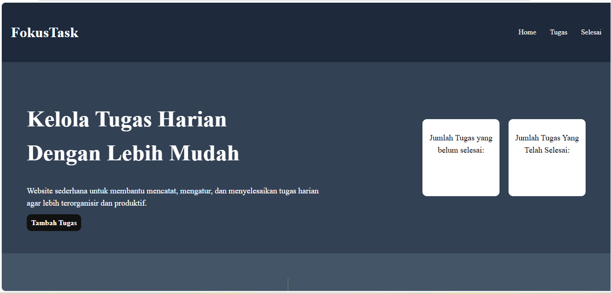
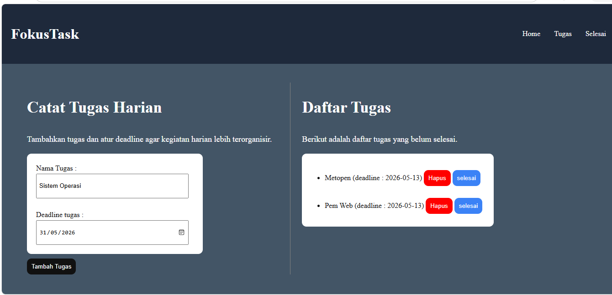
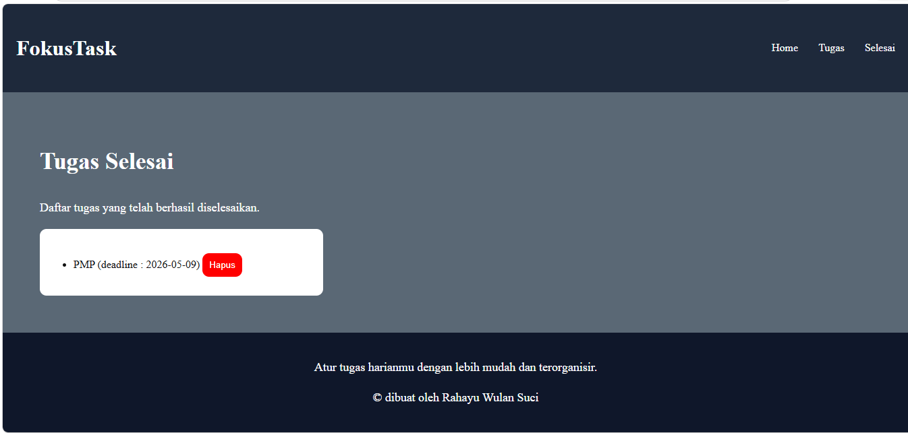

FokusTask adalah website manajemen tugas harian sederhana yang dibuat sebagai latihan pengembangan website interaktif menggunakan JavaScript dasar. Project ini dirancang untuk membantu pengguna mencatat kegiatan atau tugas yang harus diselesaikan agar lebih terorganisir dan produktif.
Website ini memiliki beberapa fitur utama seperti menambahkan tugas baru, menentukan deadline tugas, menghapus tugas, dan memindahkan tugas ke daftar tugas selesai. Selain itu, website juga menampilkan statistik jumlah tugas aktif dan tugas yang telah diselesaikan secara otomatis.
Dalam proses pembuatannya, project ini menggunakan HTML untuk struktur website, CSS untuk tampilan dan layout, serta JavaScript untuk mengatur interaksi dan pengolahan data tugas.
Dalam proses pembuatan website ini, saya melakukan beberapa tahap sederhana untuk menentukan tampilan dan fitur yang sesuai dengan konsep aplikasi produktivitas.
Dalam proses pengembangan website, saya mencoba membuat tampilan yang sederhana, modern, dan mudah digunakan oleh pengguna.
Melalui project ini, saya mendapatkan pengalaman dan pemahaman dasar dalam membuat website interaktif menggunakan JavaScript.

